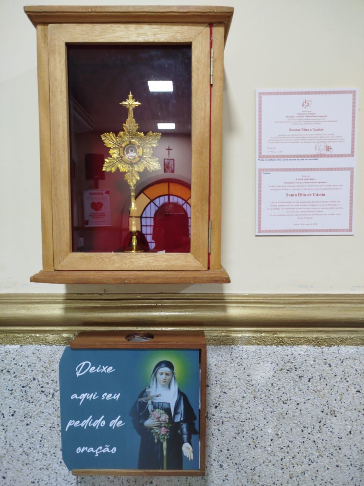

🌹 Santa Rita de Cássia
Conheça a "Santa das Causas Impossíveis" e a graça de nossa relíquia.

Relíquia de 2º Grau
Relíquia de 2º Grau
Nossa comunidade tem a honra de custodiar uma Relíquia de 2º Grau da nossa padroeira. São objetos que estiveram em contato direto com a Santa, um elo físico de fé que permanece entre nós.
Venha nos visitar e deixe o seu pedido de oração
Sua intenção será levada ao altar de Santa Rita.🎬 Vida e Milagres
Assista ao vídeo e conheça a trajetória de fé e perseverança de Santa Rita.